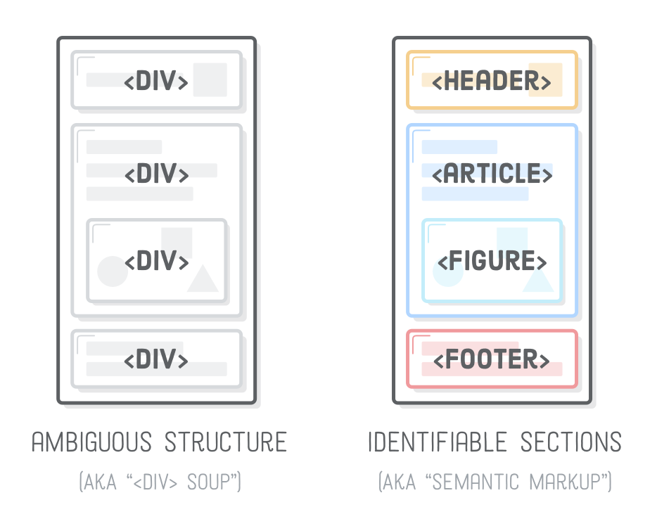
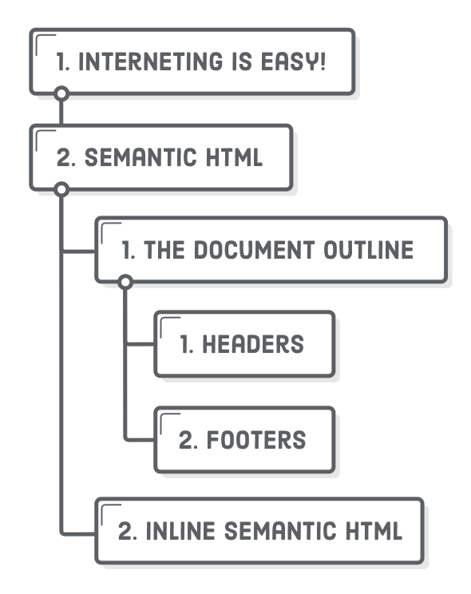
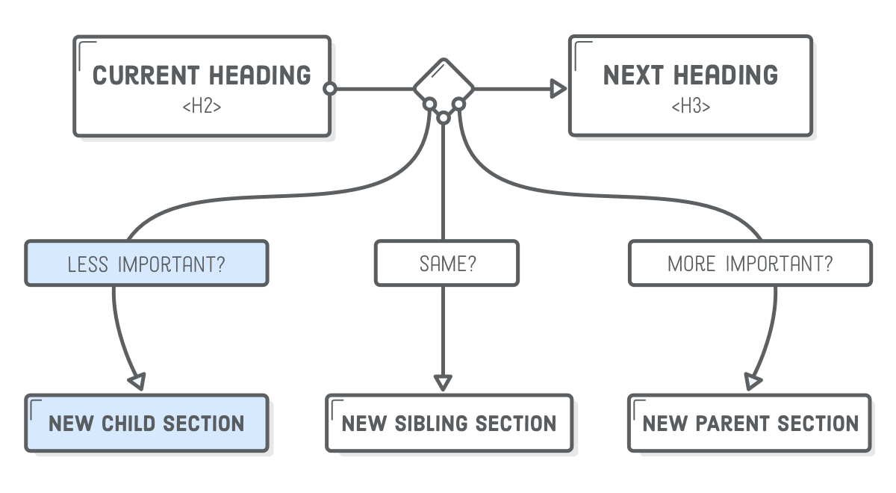
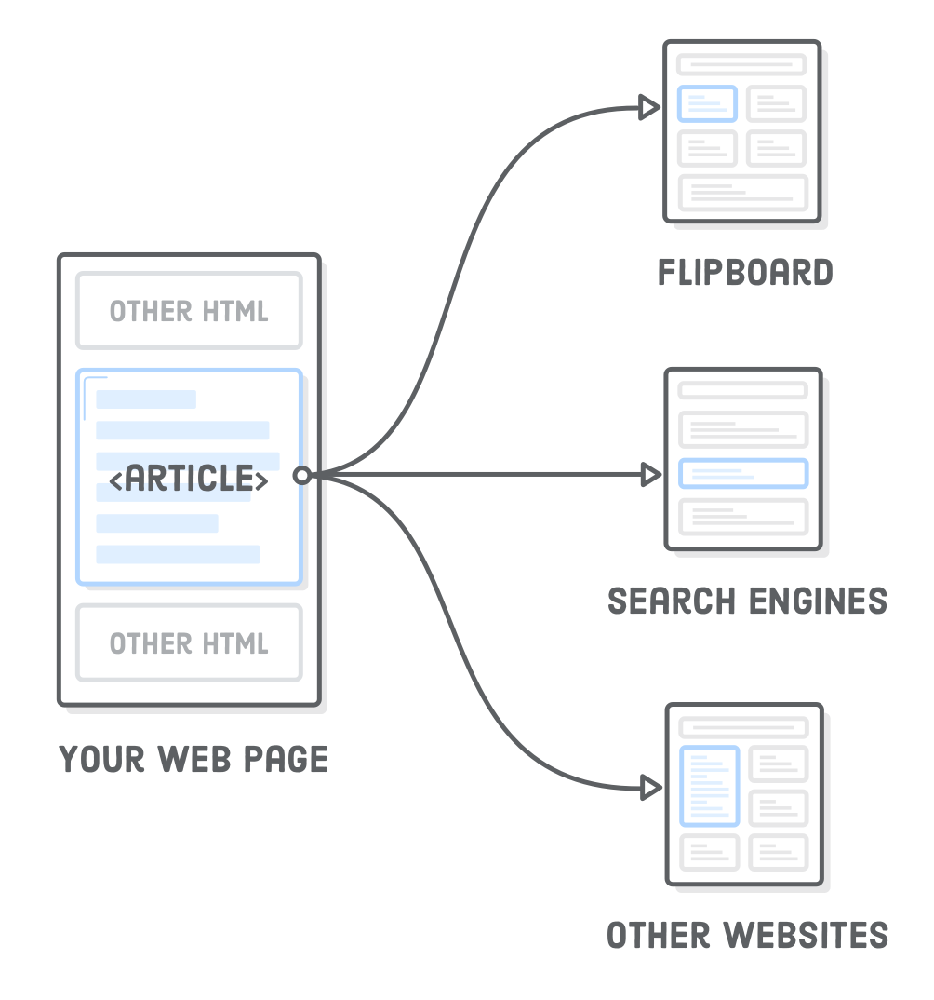
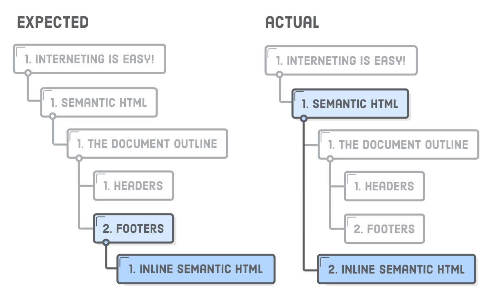
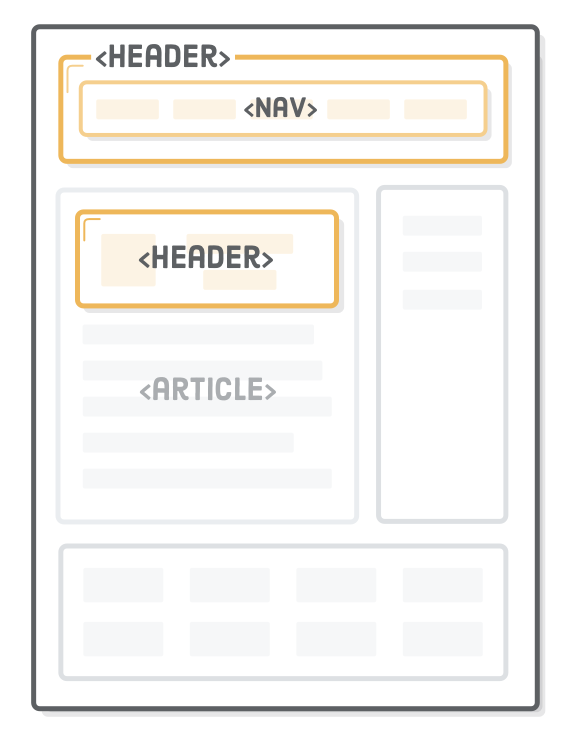
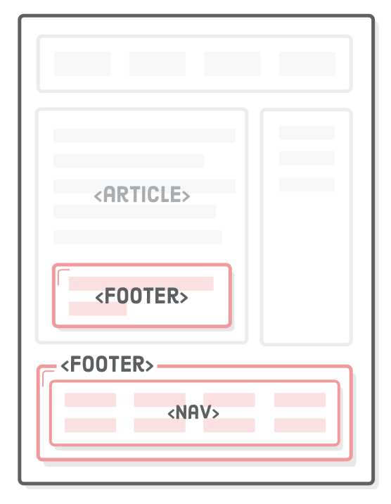
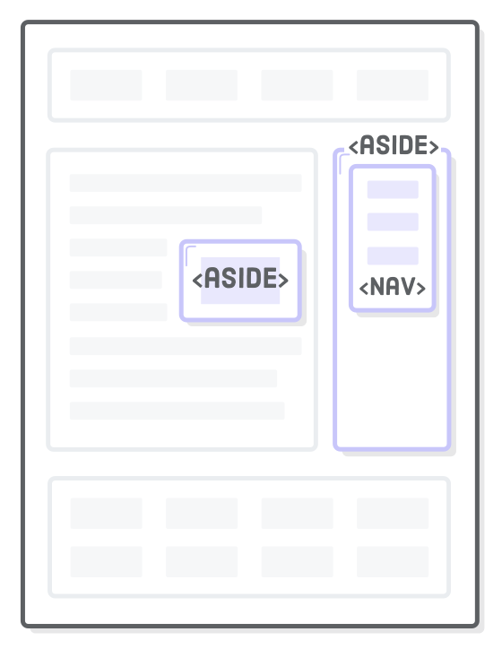
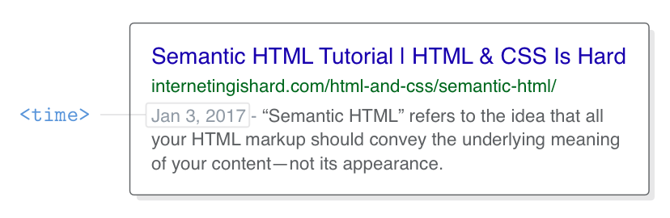

A friendly tutorial for developing meaningful web pages
“Semantic HTML” refers to the idea that all your HTML markup should convey
the underlying meaning of your content—not its appearance. We’ve already
been writing semantic HTML (e.g., using <strong>
instead of <b>), but there’s a whole set of elements
designed for the sole purpose of adding more meaning to the overall layout of
a web page. They’re called “sectioning elements”, and they look something
like this:
Using these as an alternative to <div> elements is an
important aspect of modern web development because it makes it easier for
search engines, screen readers, and other machines to identify the different
parts of your website. It also helps you as a developer keep your site
organized, which, in turn, makes it easier to maintain.

We’re going back to straight HTML this chapter—no box model, flexbox, or positioning schemes. However,
that’s not to say you can’t apply all of the CSS rules from previous chapters
to these new elements. Think of sectioning elements as
<div>’s, but with meaning.
Setup
Our example for this chapter will be a simple unstyled HTML document. Create
a new Atom project
called semantic-html with a new file in it called
article.html. Add the following:
<!DOCTYPE html><htmllang='en'><head><metacharset='UTF-8'/><title>Semantic HTML</title></head><body><h1>Interneting Is Easy!</h1><ul><li><ahref='#'>Home</a></li><li><ahref='#'>About</a></li><li><ahref='#'>Blog</a></li><li><ahref='#'>Sign Up</a></li></ul></body></html>
That <h1> and <ul> are presumably the
top-level banner for our website—not the main content of the web page.
We’ve never had to make this distinction before, but that’s what
this whole chapter is about.
The Document Outline
Every HTML document has an “outline,” which is how search
engines and screen readers view the hierarchy of the content on the page. The
<h1> through <h6>heading elements all
contribute to a page’s document outline. Let’s check it out by
adding a dummy blog post to our article.html file:
The HTML5 Outliner is a
convenient tool for inspecting the document outline of a page. Go ahead and
paste the entirety of article.html into the text field at the
bottom. You should see the outline for our example, which currently has the
following structure. It’s a little reminiscent of the research paper
outlines you learned to make in elementary school.

Each <h1> element creates a new section in the document
outline, and any less prominent headings that follow it are considered
subsections under that top-level heading. E.g., the Semantic
HTML section has two subsections in it: The Document
Outline and Inline Semantic HTML. The same
goes for <h2> and <h3> elements, and so
on down to <h6>.
Note that the actual value of the heading level doesn’t matter:
what’s important is whether or not it’s greater than or less than
the heading of the current section. For example, change the
<h3> headings to <h4> and run it
through the outliner tool again. Since the <h4> is still
less than the parent <h2>, this shouldn’t have any
affect on the document outline.

How’s this document outline stuff relate to semantic HTML? Well,
headings are some of the most semantic things in a web page. They play a
significant role in how search engines determine what’s important in your
web page. In addition, the semantic HTML elements we’re about to cover
add more meaning to and sometimes even alter the default outlining behavior
discussed here.
Articles
The <article> element represents an independent article
in a web page. It should only wrap content that can be plucked out of your page
and distributed in a completely different context. For instance, an app like Flipboard should be able to
grab an <article> element from your site, display it in
its own app, and have it make perfect sense to its readers.

In our example, we can use <article> to mark the main
content of the page as a self-contained unit, like so:
Notice how we left the copyright notice outside the
<article> element because it’s a footer for the entire
site—not specifically for our article. As we’ll discover shortly,
<article>’s are essentially mini web pages in
your HTML document. They have their own headers, footers, and document outline
that are completely isolated from the rest of your site.
Using Multiple Article Elements
For things like blog posts, newspaper articles, or web pages dedicated to a
single topic, there’s often only one <article> element on
the page. But, it’s perfectly legal to have more than one
<article> element per page. A good example is a page that
displays a bunch of blog posts. Each one of them can be wrapped in a separate
set of <article> tags (you don’t need to add this to our
article.html page):
<article><h1>First Post</h1><p>Some content</p></article><article><h1>Second Post</h1><p>Some more content</p><h2>Subsection</h2><p>Some details</p></article><article><h1>Last Post</h1><p>Final bit of content</p></article>
This tells anybody looking at our page that there are three distinct articles
that can be syndicated. Think of it as a way to merge multiple HTML files into
a single document without confusing search engines, browsers, or other machines
that are trying to parse our content.
Compare this to a bunch of generic <div> elements with
arbitrary class names, and you can begin to see how semantic HTML makes the Web
a much easier place to navigate.
Sections
The <section> element is sort of like an
<article>, except it doesn’t need to make sense
outside the context of the document. That is, an app like Flipboard
wouldn’t try to pull out all the <section>’s of
your page and present them as independent pieces of content.
Think of <section> as an explicit way to define
the sections in a document outline. Why would we want this instead of letting
the heading levels do it for us? Often times, you need a container to wrap a
section for layout purposes, and it makes sense to use the more descriptive
<section> element over a generic
<div>.
Let’s section off two parts of our article.html file:
<section><!-- Add this --><h2>The Document Outline</h2><p>HTML5 includes several “sectioning content” elements that
affect the document outline.</p><h3>Headers</h3><p>The <code><header></code> element is one such sectioning
element.</p><h3>Footers</h3><p>And so is the <code><footer></code> element.</p></section><!-- And this --><section><!-- This too! --><h2>Inline Semantic HTML</h2><p>The <code><time></code> element is semantic, but it’s not
sectioning content.</p></section><!-- Don't forget this -->
This keeps our document outline the exact same while lending it some extra
semantic structure, as well as a nice hook for any CSS styles we might want to
apply (e.g., a background color for a particular section).
<section> and the Document Outline
The previous change also has an interesting side effect on the implicit
sectioning behavior of our headings. Watch what happens when we bump the
second <h2> down to a much lower heading level:
<section><h6>Inline Semantic HTML</h6><!-- Change this heading level --><p>The <code><time></code> element is semantic, but it’s not
sectioning content.</p></section>
The <h6> is lower than the <h3> that
precedes it, so you might expect it to become part of the
Footer section. But, that’s not the case: the document
outline is still the exact same as before.

By adding those <section> elements, we’re telling
the document outline that it should be defined by the nesting structure of the
<section> elements instead of the heading levels. This
basically means that each <section> can have its own
set of <h1> through <h6> headings that are
independent of the rest of the page.
However, you shouldn’t use the <section> element to
manipulate the document outline in this way because browsers, screen readers,
and some search engines don’t properly interpret the effect of
<section> on the document outline. Instead, always define a
page’s outline via heading levels, using <section>
only as a replacement for container <div>’s when
appropriate.
Also note that each <section> element should contain at
least one heading, otherwise it will add an “untitled section” to
your document outline. As an example, try updating
article.html to match the following, then run it through
the outliner tool again:
<h2>Inline Semantic HTML</h2><section><!-- This will be an "Untitled Section" --><p>The <code><time></code> element is semantic, but it’s not
sectioning content.</p></section>
This creates a new section, but since there’s no heading associated
with it, the document outline doesn’t know what to call it. This should
generally be avoided when using <section> elements.
As defined by the HTML5 specification, <section> is a
pretty generic element. That, plus the fact that browsers and screen readers
can’t properly interpret its role in document outlines makes it difficult
to know when and how to leverage it properly. Our advice is to only use
<section> as a more descriptive <div>
wrapper for the implicitly defined sections of your page. Don’t use it
for self-contained content (that’s what <article> is
for) or when it’s purely for layout
purposes.
Nav Elements
The <nav> element lets you mark up the various navigation
sections of your website. This goes for the main site navigation, links to related
pages in a sidebar, tables of content, and pretty much any group of links. For
example, we should stick our site-wide navigation menu in a
<nav> element:
<h1>Interneting Is Easy!</h1><nav><!-- Add this --><ul><li><ahref='#'>Home</a></li><li><ahref='#'>About</a></li><li><ahref='#'>Blog</a></li><li><ahref='#'>Sign Up</a></li></ul></nav><!-- This too! -->
This is a great piece of semantic information for search engines. It helps
them quickly identify the structure of your entire website, making it easier to
discover other pages. As we’ll see in Asides,
it’s possible to include multiple <nav> elements on a
single page if you have different sets of related links.
Headers
The <header> element is a new piece of semantic markup,
not to be confused with headings (the
<h1>-<h6> elements). It denotes
introductory content for a section, article, or entire web page.
“Introductory content” can be anything from your company’s
logo to navigational aids or author information.

It’s a best practice to wrap a website’s name/logo
and main navigation in a <header>, so let’s go ahead
and add one to our example project:
<header><h1>Interneting Is Easy!</h1><nav><ul><li><ahref='#'>Home</a></li><li><ahref='#'>About</a></li><li><ahref='#'>Blog</a></li><li><ahref='#'>Sign Up</a></li></ul></nav></header>
Headers are only associated with the nearest sectioning
element—typically a <body>,
<section>, or <article> element. This
means that you can use multiple <header> elements to add
introductory content to different parts of a document. For instance, the title,
author, and publication date of our <article> is a pretty
good candidate for another <header>:
<article><header><h1>Semantic HTML</h1><p>By Troy McClure. Published January 3rd</p></header><p>This is an example web page explaining HTML5 semantic markup.</p><!-- ... -->
Without this <header>,
search engines and screen readers wouldn’t know that first
<p> was separate from the main content of the article. Like
<section>, it also serves as a convenient CSS hook, since
the title and author info for a blog post are often styled differently than the
rest of the article. Again, think of <header> as a more
semantic alternative to a <div> container.
Footers
Conceptually, footers are basically the same as headers, except they
generally come at end of an article/website opposed to the beginning. Common
use cases include things like copyright notices, footer navigation, and author
bios at the end of blog posts.

Footers behave the same as <header> in that they’re
associated with the nearest sectioning element. So, we can use it for our
page’s copyright notice and the author information inside our
<article>. Add the following two footer elements to our
article.html page:
The <footer> inside the <article>
element is only for the contents of that article, which makes sense because it
contains the author’s bio. The second footer, on the other hand, is
connected to the entire page.
Asides
Headers and footers are ways to add extra information to an article, but
sometimes we want to remove information from an article. For example,
a sponsored blog post might contain an advertisement about the sponsoring
company; however, we probably don’t want to make it part of the article
text. This is what the <aside> element is for.

Let’s add a fake advertisement to our article.html file,
right underneath the article’s header:
<article><header><h1>Semantic HTML</h1><p>By Troy McClure. Published January 3rd</p></header><!-- Look! A fake advertisement! --><asideclass='advert'><imgsrc='some-advert-image.png'/></aside><p>This is an example web page explaining HTML5 semantic markup.</p>
Even though the image is inside the <article> element,
machine readers know that it’s only tangentially related to the article
content. In addition to advertisements, <aside> is also
appropriate for highlighting definitions, stats, or quotations. If it looks
different than the rest of the article, chances are it’s an aside.
When used outside an <article>, an
<aside> is associated with the page as a whole (much like
<header> and <footer>). This makes it a
good choice for marking up a site-wide sidebar. Add the following underneath
the closing </article> tag, before the second
<footer>:
<asideclass='sidebar'><h2>Sidebar</h2><p>Some sidebar content</p><nav><h3>HTML & CSS Tutorial</h3><ul><li><ahref='#'>Introduction</a></li><li><ahref='#'>Basic Web Pages</a></li><li><ahref='#'>etc...</a></li></ul></nav><nav><h3>JavaScript Tutorial</h3><ul><li><ahref='#'>Introduction</a></li><li><ahref='#'>Hello, JavaScript</a></li><li><ahref='#'>etc...</a></li></ul></nav></aside>
Notice the class attributes in both of these snippets. If we
were worried about CSS this chapter, we could style our
<aside> elements in exactly the same way as all the
<div>’s we’ve been working with throughout this
tutorial. Which brings us to…
Divs For Layout
You should use semantic HTML whenever you can, since it helps machines infer
the structure of your content, and it gives you a standardized vocabulary to
organize your web pages. However, sometimes you need a container element when
none of the semantic HTML elements we just covered would make sense.
There’s nothing wrong with using a plain old <div>
purely for layout purposes.
For instance, if we want to center our page using that familiar auto-margin
technique, we have to wrap the whole page in a container.
It’s entirely presentational, so a <div> is the best
option:
This is particularly relevant for flexbox, as it
requires lots of <div>’s to group flex items
correctly. Occasionally, you may find that a <section> or
<nav> is
appropriate for these flex items, but it’s pretty common to find a bunch
of presentational <div> elements in a flexbox layout.
The point is, don’t use semantic elements just for the sake of using
them. Implementing them incorrectly is worse than not using them at all, so if
you’re ever in doubt, use a <div> instead.
Dates and Times
For humans, dates and times come in many forms. You can refer to January
3rd, 2017 as “1/3/2017”, “Jan 3rd”, or even
“yesterday” depending on the current date. Parsing this kind of
ambiguous natural language is difficult and error-prone for machines, which is
where <time> comes in.
The <time> element represents either a time of day or a
calendar date. Providing a machine-readable date makes it possible for browsers
to automatically link it to users’ calendars and helps search engines
clearly identify specific dates. A simple Google search will show you the
effect of including a <time> element on your page:

Let’s make the publish date of our article unambiguous by wrapping it
in <time> tags:
<article><header><h1>Semantic HTML</h1><p>By Troy McClure. Published <timedatetime='2017-1-3'>January
3rd</time></p></header><!-- ... -->
The machine-readable date is defined in the datetime attribute.
An easy way to remember the date format is that it goes from largest time
period to smallest: year, month, then date. Note that even though the year
isn’t included in the human-readable text, this tells search engines that
our article was published in 2017.
It’s possible to include times and time zones inside of
datetime, too. If we wanted to add a 3:00pm PST time to our
publish date, we’d use the following:
The time itself is in 24-hour format, and the -0800 is the time
zone offset from GMT (in this case, -0800 represents Pacific
Standard Time).
Address
The <address> element is like <time>
in that it doesn’t deal with the overall structure of a document, but
rather embellishes the parent <article> or
<body> element with some metadata. It defines contact
information for the author of the article or web page in question.
<address> should not be used for arbitrary physical
addresses.
For instance, maybe we want to add an author email address in our
article’s footer:
<footer><p>This fake article was written by somebody at InternetingIsHard.com, which
is a pretty decent place to learn how to become a web developer. This footer
is only for the containing <code><article></code> element.</p><address>
Please contact <ahref='mailto:troymcclure@example.com'>Troy
McClure</a> for questions about this article.
</address></footer>
By default, this will be styled the same way as <em>, but
you can change that with a simple CSS rule. Also notice the new email link in the
href, which you can read more about at Mozilla
Developer Network.
Figures and Captions
Last, but certainly not least, are the <figure> and
<figcaption> elements. The former represents a
self-contained “figure”, like a diagram, illustration, or even a
code snippet. The latter is optional, and it associates a caption with its
parent <figure> element.
A common use case for both of these is to add visible descriptions to the
<img/> elements in an article, like so:
<section><h2>The Document Outline</h2><p>HTML5 includes several “sectioning content” elements that
affect the document outline.</p><figure><imgsrc='semantic-elements.png'alt='Diagram showing <article>, <section>, and <nav> elements'/><figcaption>New HTML5 semantic elements</figcaption></figure><!-- ... -->
The alt
attribute is closely related to the
<figcaption> element. alt should serve as a
text replacement for the image, while <figcaption> is
a supporting description displayed with either the image or its
text-based equivalent.
When using <figcaption> in the above manner, you can
safely omit an image’s alt attribute without hurting your
SEO. Depending on what kind of images you’re working with, it may be more
convenient (and less redundant) to have visible
<figcaption>’s that describe them opposed to invisible
alt attributes.
CSS/Legacy Considerations
And finally, a quick note on legacy browsers. The semantic HTML elements in
this chapter were introduced in HTML5. All modern browser recognize them
without any extra work, but you’ll often see something like the following
in global CSS stylesheets:
section, article, aside, footer, header, nav {
display: block;
}
This makes the new semantic elements behave like <div>
elements (which are block boxes, not inline boxes) in legacy browsers.
Summary
Defining graphical styles with CSS is how we convey the structure of a web
page to humans. By marking it up with <header>,
<article>, <figure>, and other HTML
sectioning elements, we’re able to represent those visual styles to machines,
as well.
To understand why this is important, we really have to empathize with the
machines reading our content. Before semantic HTML was a thing, developers used
a bunch of <div>’s with different and somewhat arbitrary
class names to define the structure of their pages. For example, all of the
following elements are logical names for a site-wide header:
Machine readers used to have to make sense of all the above
<div>’s and more. The new semantic HTML elements we
learned in this chapter are like standardized versions of these class names.
Now, they can simply look for a <header> element. We can
still add whatever class name we want to it for styling purposes, but search
engines and screen readers now have a predictable way to identify headers
across every HTML5 website on the Internet.
The semantic elements we covered in this chapter are best practices for
modern websites, but keep in mind that they hardly scratch the surface when it
comes to extra meaning you can add to your web pages. Just for starters:
Schema.org
microdata lets you alter the appearance of your site in search engine
results.
Twitter cards define how your web page is displayed
in tweets.
This kind of stuff is closer to the realm of
technical SEO, so we’ll leave you to explore it on your own. In the next
chapter, we’ll switch gears again and introduce another critical component of
websites (especially e-commerce ones): forms.